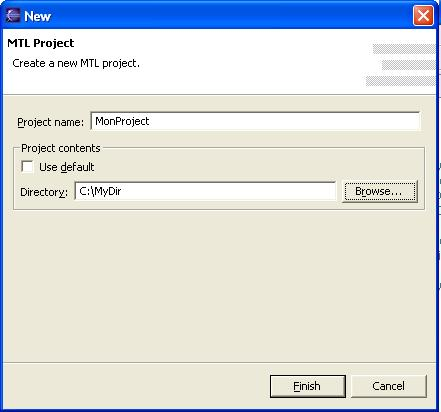
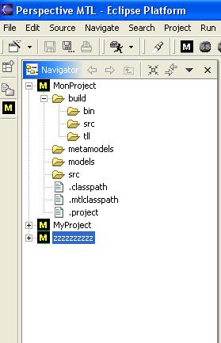

As in the previous section, select File → New → Project... Select your project type and click Next. This will bring you to the project name and location page.
Enter a project name as in the previous section, but instead of clicking Finish uncheck the Use default checkbox.
|  |
| Figure 1: Use Existing Directory |
|---|
Type in the absolute path to an existing directory, or use the Browse... button to locate the directory in the file system. When you have identified the directory, click Finish.
|  |
| Figure 2: New Docbook Project |
|---|
Our example MonProj
directory contained some subdirectory named src, build, models
like predefine in Preferences/New
Project. As you can see, those subdirectories have become
part of our new project.
Note that the project contains a file named .project,
just as in the preceding section. This file wasn't in the existing
directory, but if you look at the disk, you will see that it is now; it
was written there by Eclipse as part creating the project.
There is no way to avoid having the .project file
written. It doesn't take up much space and shouldn't be a real concern,
but if you absolutely cannot add a file to a directory you want to use,
your other choice is to import the directory, which copies the files
into your project directory. This is discussed in a separate section.
There is currently away for an MTL project to refer to a directory outside the project directory. However, a Java project can have a number of source directories that do not have to be in the project. You do it by right-clicking on the project in the Navigator or Package Explorer view and selecting Properties → MTL Build Path → Source → Add Existing Folders... You can do the same thing with the Java project which will be generated by the MTL project See the Java documentation for more details.